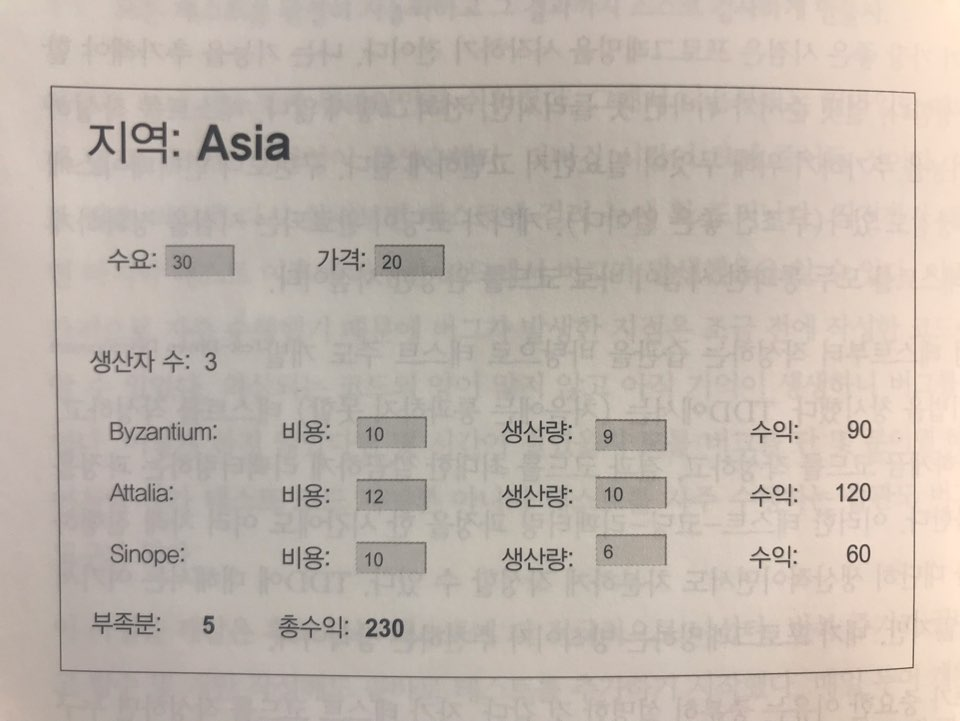
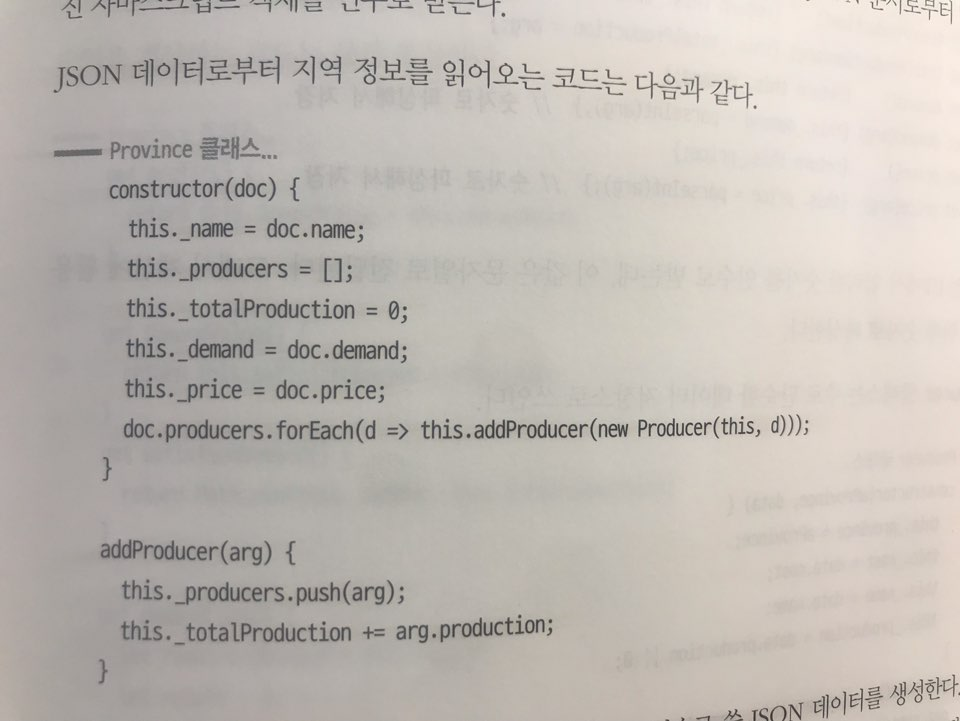

테스트할 샘플 코드

- 엑셀과 비슷한 기능이라 생각하면 된다.
비지니스 로직은 생산자를 표현하는 Producer, 지역 전체를 표현하는 Province 두 개로 구성된다.

- Province 클래스는 생성자를 통해 데이터를 받고, 이를 Private 변수에 할당한다.
- Province 클래스는 게터와 세터로 이루어진 다양한 데이터 접근자들을 가지고 있다.
- Province 클래스는 생상 부족분, 수익을 계산하는 멤버함수들을 가지고 있다.
sampleProvinceData 함수는 provinceClass의 인스턴스를 만들 때 생성자로 데이터를 밀어 넣어주는 함수다. 해당 함수의 테스트는 반환 값으로 Province 객체를 생성해보면 된다.

- Producer 클래스는 주로 데이터 저장소로 쓰인다. (게터 + 세터 + 내부변수)
테스트 코드 실습
Province 클래스
const {createProducer} = require('./producer')
class Province {
constructor (doc) {
this._name = doc._name
this._producers = []
this._totalProduction = 0
this._demand = doc.demand
this._price = doc.price
doc.producers.forEach(d => this.addProducer(createProducer(this, d)))
}
get name() {return this._name}
get producers() {return this._producers}
get totalProduction() {return this._totalProduction}
set totalProduction(arg) {this._totalProduction = arg}
get demand() {return this._demand}
set demand(arg) {this._demand = parseInt(arg)}
get price() {return this._price}
set price(arg) {this._price = parseInt(arg)}
addProducer (arg) {
this._producers.push(arg)
this._totalProduction += arg.production
}
get shortfall() {
return this._demand - this.totalProduction
}
get profit() {return this.demandValue - this.demandCost}
get demandValue() {return this.satisfiedDemand * this.price}
get satisfiedDemand() {return Math.min(this._demand, this.totalProduction)}
get demandCost() {
let remainingDemand = this.demand
let result = 0
this.producers
.sort((a, b) => a.cost - b.cost)
.forEach(p => {
const contribution = Math.min(remainingDemand, p.production)
remainingDemand -= contribution
result += contribution * p.cost
})
return result
}
}
module.exports = {
sampleProvinceData: () => ({
name: "Asia",
producers: [,
{name: "Byzantium", cost: 10, production: 9},
{name: "Attalia", cost: 12, production: 10},
{name: "Sinope", cost: 10, production: 6}
],
demand: 30,
price: 20
}),
createProvince: (doc) => {
return new Province(doc)
}
}
Producer 클래스
class Producer {
constructor(aProvince, data) {
this._province = aProvince;
this._cost = data.cost;
this._name = data.name;
this._production = data.production || 0
}
get name() { return this._name; }
get cost() { return this._cost; }
set cost(arg) { this._cost = parseInt(arg); }
get production() { return this._production; }
set production(amountStr) {
const amount = parseInt(amountStr);
const newProduction = Number.isNaN(amount)? 0 : amount
this._province.totalProduction += newProduction - this._production
this._production = newProduction
}
}
module.exports = {
createProducer: (aProvince, data) => {
return new Producer(aProvince, data)
}
}
Mocha, Chai로 작성한 테스트 코드
const chai = require("chai");
const expect = chai.expect;
const {createProvince, sampleProvinceData} = require('./province')
describe('province', () => { // (1)
let asia
beforeEach(() => {
asia = createProvince(sampleProvinceData())
})
it('shortfall', () => {
expect(asia.shortfall).to.equal(5)
})
it('profit', () => {
expect(asia.profit).to.equal(230)
})
it('change production', () => {
// when
asia.producers[0].production = 20
// expect
expect(asia.shortfall).to.equal(-6)
expect(asia.profit).to.equal(292)
})
it('zero demand', () => {
asia.demand = 0
expect(asia.shortfall).to.equal(-25)
expect(asia.profit).to.equal(0)
})
it('negative demand', () => {
asia.demand = -1
expect(asia.shortfall).to.equal(-26)
expect(asia.profit).to.equal(-10)
})
it('empty string demand', () => {
asia.demand = ""
expect(asia.shortfall).NaN
expect(asia.profit).NaN
})
})
describe('no producers', () => { // (2)
let noProducers
beforeEach(() => {
const data = {
name: "No Producers",
producers: [],
demand: 30,
price: 20
}
noProducers = createProvince(data)
})
it('shortfall', () => {
expect(noProducers.shortfall).to.equal(30)
})
it('profit', () => {
expect(noProducers.profit).to.equal(0)
})
})
describe('string for producers', () => { // (3)
it('', () => {
const data = {
name: "String producers",
producers: "",
demand: 30,
price: 20
}
const prov = createProvince(data)
expect(prov.shortfall).to.equal(0)
})
})
참고 : chai 라이브러리 Document